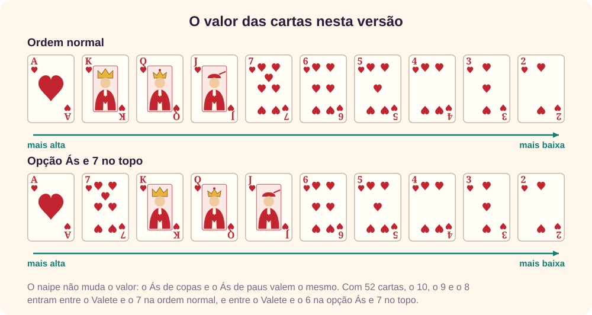
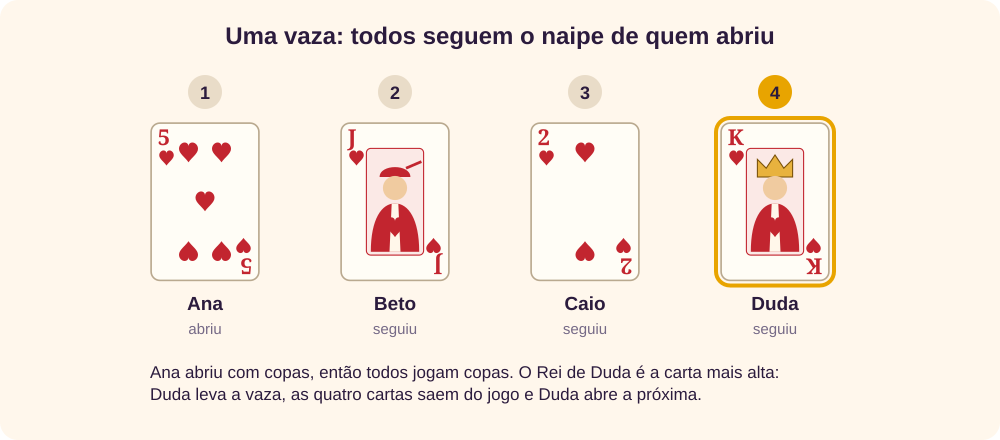
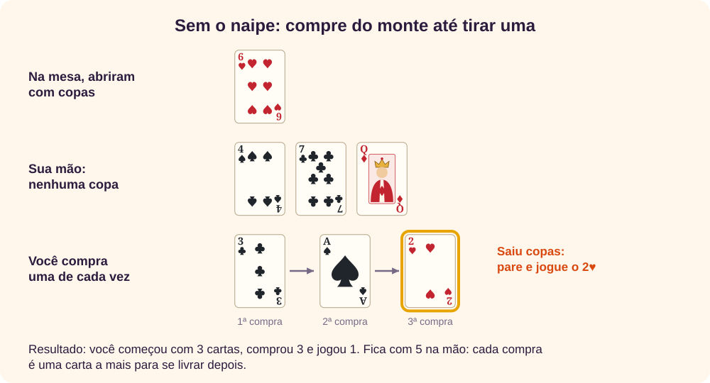
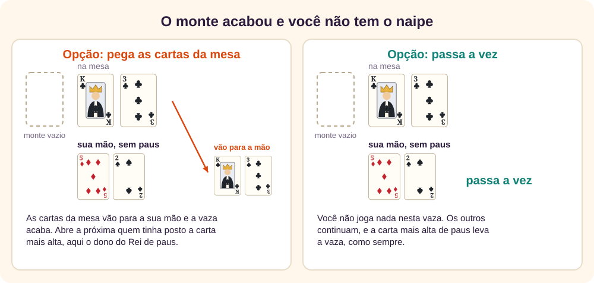
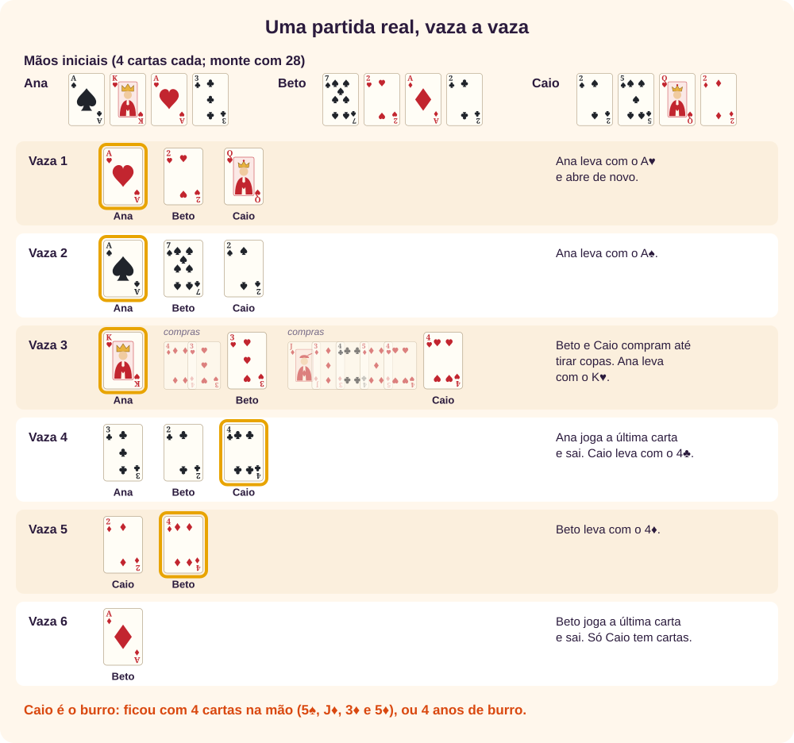
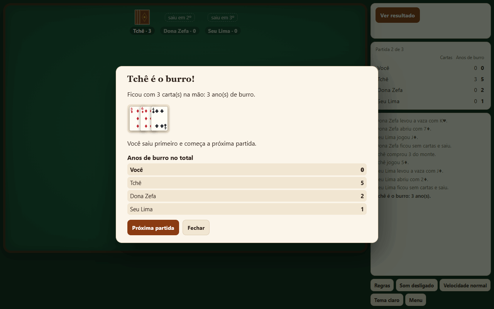

O jogo em um minuto
O burro é um jogo de cartas tradicional, de regras curtas. [1] Cada jogador recebe poucas cartas, e a cada rodada todos jogam uma carta do mesmo naipe de quem começou. Quem não tem esse naipe precisa comprar do monte até tirar um.
O objetivo é ficar sem cartas. Quem esvazia a mão sai da partida, e o último que sobrar com cartas na mão é o burro. [1] Não há pontos para decorar, mas há escolhas: com que carta abrir, quando gastar uma carta alta e quando guardá-la.
↑ Voltar ao topoAs cartas e o valor
O mais comum é jogar com um baralho de 40 cartas: o baralho comum sem os 8, 9 e 10. [1][2] Cada jogador recebe 4 cartas, segundo a Wikipédia, ou 5, segundo o Só Jogo. O resto fica no centro, virado para baixo: é o monte. [1][2]

Neste app o Ás é sempre a carta mais alta. Na ordem normal vêm depois o Rei, a Dama e o Valete, e então do 7 ao 2. Há também a opção com Ás e 7 no topo, que o Só Jogo usa: A, 7, R, D, V, 6, 5, 4, 3, 2. [2] Não existe trunfo: nenhum naipe vale mais que outro. [1]
O valor só serve para decidir quem leva a vaza. No fim, o que conta é quantas cartas sobraram na mão, não quais são.
↑ Voltar ao topoA vaza: siga o naipe
Cada rodada de cartas na mesa é uma vaza. Quem abre joga a carta que quiser. Os outros, na ordem, são obrigados a jogar uma carta do mesmo naipe. [1][2]

Leva a vaza quem jogou a carta mais alta do naipe de quem abriu. Quem levou abre a próxima. [1] As fontes não dizem o que fazer com as cartas da vaza; no app, elas saem do jogo. Levar é bom: quem abre escolhe o naipe e nunca precisa comprar.
Se você tem mais de uma carta do naipe, escolhe qual jogar. Pode jogar uma carta alta para levar, ou uma baixa para guardar as altas.
↑ Voltar ao topoSem o naipe: compre do monte
Quem não tem nenhuma carta do naipe da vaza compra do monte, uma carta de cada vez, até tirar uma desse naipe, e então a joga. [1][2] As outras cartas compradas ficam na mão.

É aqui que o jogo castiga: cada compra é uma carta a mais para se livrar depois. Numa partida comprida, um jogador pode entrar na vaza com 2 cartas e sair com 6, como Caio na partida comentada.
Comprar não é exceção. Em 30.000 mãos iniciais de 4 cartas que sorteamos, 89,2% não tinham os quatro naipes. [3]
↑ Voltar ao topoQuando o monte acaba
Se o monte acabou e você não tem o naipe, as fontes não concordam. [1][2] O app traz as duas regras:

- Pega as cartas da mesa (Só Jogo). As cartas da vaza vão para a sua mão e a vaza termina. [2] Quem abre a próxima é quem tinha posto a carta mais alta.
- Passa a vez (Wikipédia). Você não joga nesta vaza, e os outros continuam normalmente. [1]
Com a primeira regra, as cartas voltam para o jogo e, muito raramente, a partida pode girar sem fim: aconteceu 5 vezes em 45.000 partidas simuladas. [3] Por isso o app encerra a partida se o monte já acabou e passam 100 vazas sem ninguém sair. Nesse caso, é burro quem tiver mais cartas, e no empate todos os empatados. A partida mais longa que terminou sozinha nas simulações teve 64 vazas nessa situação.
↑ Voltar ao topoQuem sai e quem fica de burro
Quem joga a última carta da mão sai da partida na hora, mesmo no meio da vaza. A vaza segue com os outros, e se quem saiu tinha a carta mais alta, abre a próxima o jogador seguinte.
A partida acaba quando só um jogador ainda tem cartas: esse é o burro. Ele nem precisa terminar a vaza.
Anos de burro
O Só Jogo conta pontos assim: o burro leva um ano de burro para cada carta que ficou na mão dele. Jogam-se várias partidas, e somam-se os anos de cada um. [2] No app você escolhe 1, 3 ou 5 partidas, e vence quem tiver menos anos no fim. A partida seguinte começa com quem saiu primeiro.
↑ Voltar ao topoUma partida comentada
Esta é uma partida real, jogada pelo motor do app entre três jogadores no nível Difícil, com 4 cartas cada, baralho de 40 cartas e a regra de pegar a mesa. [3] As cartas compradas aparecem mais claras, antes da carta jogada.

- Vazas 1 e 2. Ana abre com A♥ e depois com A♠. Ninguém pode bater um Ás, então ela leva as duas e continua abrindo.
- Vaza 3. Ana abre com K♥. Beto não tem copas: compra 4♦ e 3♥ e joga o 3♥. Caio também não tem: compra cinco cartas até tirar o 4♥. Ana leva de novo e fica com uma carta só.
- Vaza 4. Ana abre com a última carta, o 3♣, e sai. Caio leva com o 4♣.
- Vaza 5. Caio abre com 2♦ e Beto leva com o 4♦.
- Vaza 6. Beto abre com o A♦, sua última carta, e sai. Só Caio ainda tem cartas, então a partida acaba aí: Caio é o burro, com 4 cartas na mão, e leva 4 anos de burro.
Repare no que decidiu a partida: as cinco compras de Caio na vaza 3. Ele entrou nela com 2 cartas e saiu com 6.
↑ Voltar ao topoA tela do app
O app segue as regras por você. Só deixa jogar as cartas permitidas e mostra o que fazer a cada momento.
- Adversários, no alto, com quantas cartas cada um tem. O nome em amarelo é de quem está jogando.
- Monte, com quantas cartas restam. Ele fica destacado quando você precisa comprar.
- Vaza, no centro: o naipe, quem jogou cada carta e a carta maior até agora.
- Sua mão, embaixo. Toque numa carta destacada e depois em Jogar, ou toque nela duas vezes. No teclado, use Tab e Enter.
- Painel, à direita: o que fazer agora, o placar com cartas e anos de burro e o histórico de jogadas.

As opções do menu
| Opção | O que muda |
|---|---|
| Jogadores | De 2 a 6, sempre você contra o computador. |
| Dificuldade | Fácil joga ao acaso; Médio tenta levar as vazas; Difícil também lembra quem já foi ao monte. |
| Partidas | 1, 3 ou 5. Vence quem somar menos anos de burro. |
| Baralho | 40 cartas, sem 8, 9 e 10, ou 52. |
| Valor das cartas | Do 2 ao Ás, ou Ás e 7 no topo. |
| Cartas na mão | 3, 4 ou 5. |
| Monte vazio, sem o naipe | Pega as cartas da mesa, ou passa a vez. |
Dicas para começar bem
Testamos estilos de jogo em 30.000 partidas de 3 jogadores cada: um jogador com o estilo indicado contra dois no nível Difícil, com 4 cartas, baralho de 40 e a regra de pegar a mesa. [3] Se todos jogassem igual, cada um seria burro em 33,3% das partidas, com margem de erro de 0,5 ponto.
| Estilo de jogo | Vezes em que foi o burro | Anos de burro por partida |
|---|---|---|
| Referência: o nível Difícil | 33,0% | 1,60 |
| Abre com a mais baixa do naipe mais longo | 33,3% | 2,07 |
| Segue sempre com a carta mais alta | 37,0% | 1,82 |
| Segue sempre com a carta mais baixa | 37,3% | 2,05 |
| O nível Médio | 41,1% | 2,02 |
| Abre pelo naipe mais curto | 45,8% | 2,66 |
| Joga ao acaso (nível Fácil) | 46,4% | 2,80 |
| Abre com a carta mais alta da mão | 46,7% | 2,39 |
Os anos por partida contam também as partidas em que o jogador não foi o burro, com zero. Os computadores não jogam como pessoas, então olhe para a direção dos números, não para o valor exato.
Abra pelo seu naipe mais longo
Abrir pelo naipe mais curto fez o jogador ser burro em 45,8% das partidas, contra 33,3% abrindo pelo mais longo. Gastar uma carta do naipe em que você tem mais preserva os outros naipes, e assim você consegue seguir sem comprar.
Não abra com a mais alta só porque é alta
Abrir sempre com a carta mais alta da mão deu 46,7%. Muitas vezes ela é a única do naipe, e gastá-la deixa você sem esse naipe para seguir depois.
Se não dá para levar, jogue a mais baixa
Seguir sempre com a carta mais alta, mesmo sem chance de levar, deu 37,0%. Uma carta alta gasta à toa faz falta numa vaza que você poderia levar.
Se dá para levar, leve
Seguir sempre com a mais baixa, mesmo podendo levar, deu 37,3%. Quem leva abre a próxima vaza, e quem abre escolhe o naipe e nunca compra.
Lembre quem foi ao monte
Quem comprou atrás de copas provavelmente continua sem copas. Abrir copas obriga essa pessoa a comprar de novo. É o que o nível Difícil faz, e é a diferença entre ele e o Médio.
Conte os Ases que já saíram
Uma carta alta só leva com certeza se as maiores do naipe já saíram. Se os Ases e Reis de espadas já foram, a sua Dama de espadas é a maior da mesa.
Quanto dura uma partida
Medimos 5.000 partidas de cada tamanho, com todos no nível Difícil e as mesmas regras acima. [3]
| Jogadores | Vazas por partida | Compras por partida | Vezes que alguém pegou a mesa | Cartas na mão do burro |
|---|---|---|---|---|
| 2 | 10,0 | 13,4 | 1,1 | 4,6 |
| 3 | 17,5 | 23,3 | 5,3 | 4,7 |
| 4 | 22,4 | 23,2 | 10,6 | 3,5 |
| 6 | 35,7 | 16,0 | 26,0 | 3,3 |
Com 6 jogadores e 40 cartas, só sobram 16 no monte depois de dar as cartas. O monte acaba cedo, há menos compras e muito mais vezes alguém pega a mesa.
↑ Voltar ao topoErros comuns
- Jogar outro naipe porque a carta é boa. Se você tem o naipe da vaza, é obrigado a jogá-lo.
- Comprar tendo o naipe. Só compra quem não tem nenhuma carta do naipe.
- Parar de comprar antes da hora, ou continuar depois. Compra-se até sair o naipe, nem uma carta a mais.
- Achar que uma carta de outro naipe ganha. Não há trunfo: só conta o naipe de quem abriu.
- Esquecer que o Ás é a mais alta. Neste app, ele ganha até do Rei.
- Contar errado os anos de burro. Contam as cartas que ficaram na mão do burro no fim, não as que ele comprou.
Regras que mudam de mesa para mesa
As duas fontes deste tutorial divergem em vários pontos, e cada mesa tem suas regras da casa. [1][2] Antes de jogar, combine:
- Cartas na mão. 4 na Wikipédia, 5 no Só Jogo. [1][2] O app aceita 3, 4 ou 5.
- Baralho. As duas fontes usam 40 cartas. [1][2] O app também oferece 52.
- Valor das cartas. A Wikipédia cita a ordem do Ás ao Rei e também uma com Ases e Três no topo, como na sueca e na bisca. [1] O Só Jogo usa A, 7, R, D, V, 6, 5, 4, 3, 2. [2] No app, o Ás é sempre o mais alto.
- Monte vazio. Passar a vez, na Wikipédia, ou pegar as cartas da mesa, no Só Jogo. [1][2] O próprio Só Jogo diverge sobre quem recomeça: o texto diz que é quem pôs a carta mais alta, mas um comentário do site diz que é quem abriu a vaza. [2] O app usa a carta mais alta.
- Quem começa. No Só Jogo, começa o mais velho, e no jogo seguinte quem ganhou. [2] No app, a primeira partida é sorteada, e as outras começam com quem saiu primeiro.
- Pontos. Os anos de burro vêm do Só Jogo; a Wikipédia não define pontos. [1][2]
- Número de jogadores. Até oito, na Wikipédia; de 2 a 6, no Só Jogo. [1][2] O app aceita de 2 a 6.
- Burro em pé. As regras são as mesmas, mas o monte fica em pé, dividido em duas metades apoiadas uma na outra. Quem derrubar o monte ao comprar fica com todas as cartas caídas. [2] O app não tem esta variante.
- Nomes regionais. A Wikipédia registra variantes como burro castigado, burro emponchado e burro tiznado. [1]
Glossário
- Abrir
- Jogar a primeira carta da vaza, de qualquer naipe.
- Anos de burro
- Os pontos do burro: um por carta que ficou na mão dele. Ganha quem tiver menos.
- Burro
- O último jogador que ainda tem cartas na mão.
- Comprar
- Tirar cartas do monte, uma por vez, até sair o naipe da vaza.
- Monte
- As cartas fechadas que sobram depois de dar as cartas.
- Naipe
- Espadas ♠, copas ♥, ouros ♦ ou paus ♣.
- Pegar a mesa
- Levar para a mão as cartas da vaza, quando o monte acabou e você não tem o naipe.
- Seguir o naipe
- Jogar uma carta do mesmo naipe de quem abriu. É obrigatório.
- Trunfo
- Naipe que ganha dos outros em alguns jogos. No burro, não existe.
- Vaza
- Uma rodada com uma carta de cada jogador na mesa.
Revisão rápida
Em resumo
- Quem abre joga qualquer carta; os outros seguem o naipe.
- Sem o naipe, compre do monte até tirar um.
- A carta mais alta do naipe leva a vaza e abre a próxima. O Ás é a mais alta.
- Quem fica sem cartas sai; o último com cartas é o burro.
- Abra pelo seu naipe mais longo e não gaste cartas altas à toa.
1. Abriram com 5♥. Você tem K♠ e 2♥. O que joga?
O 2♥. Você tem copas, então é obrigado a seguir o naipe.
2. Abriram com 7♣ e você não tem paus. O que faz?
Compra do monte, uma carta por vez, até sair uma de paus, e joga essa carta.
3. Na mesa estão 4♦, Q♦ e A♦. Quem leva?
Quem jogou o A♦: neste app, o Ás é a carta mais alta.
4. O monte acabou, você não tem o naipe e a regra é pegar a mesa. O que acontece?
As cartas da vaza vão para a sua mão e a vaza termina. Abre a próxima quem tinha posto a carta mais alta.
5. O burro ficou com 3 cartas na mão. Quantos anos de burro ele leva?
Três: um por carta.
6. Você vai abrir e tem três copas e uma espada. Por qual naipe é melhor abrir?
Por copas, o naipe mais longo. Nas simulações, abrir pelo naipe mais curto aumentou as vezes de burro de 33,3% para 45,8%.
Referências
- Wikipédia. Burro (jogo de cartas). Baralho de 40 cartas, 4 cartas por jogador, seguir o naipe, comprar até conseguir e passar a vez com o monte vazio.
- Só Jogo. Burro e Burro em Pé. Site português com 5 cartas, ordem A-7-R-D-V, pegar as cartas da mesa com o monte vazio, anos de burro e a variante em pé.
- Simulações próprias com o jogo Burro deste site, feitas entre jogadores do computador. Não medem pessoas.